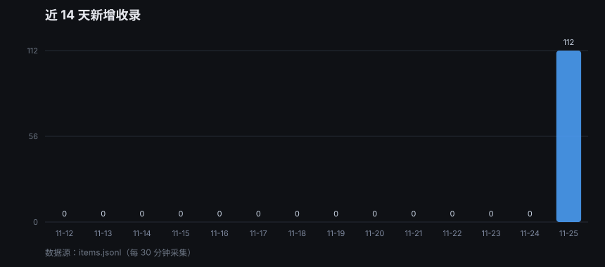
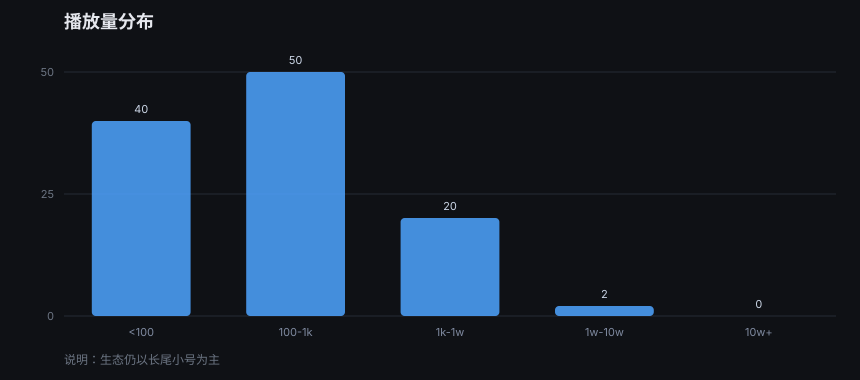
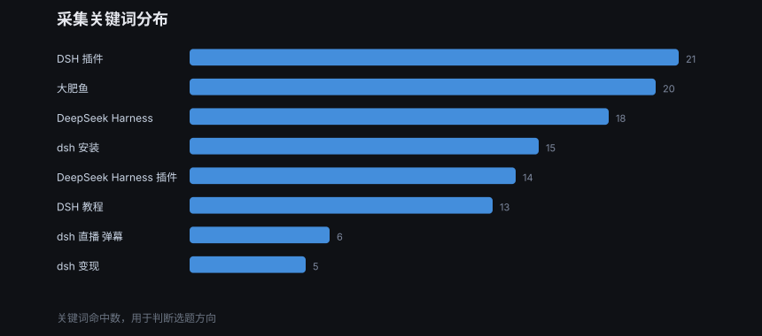

| 标题 | UP | 播放 |
|---|---|---|
| 大肥鱼桌宠：一键导入Live2D模型，克隆语音！最新教程 安装和扩展介绍【B站AI创造公开赛】 | PalAILab | 2.9万 |
| 【鸣潮×DeepSeek】爱弥斯桌宠来了！｜90 条语音、三套画风预设的免费开源桌宠 | 豆芽doya16 | 1.5万 |
| dsh-purge安装教程（无敌详细） | 777yey | 7253 |
| 别再压缩上下文了，一只成熟的大肥鱼要学会用《记忆焚化工》 | Z动开源机 | 6529 |
| 50 分钟速通 Codex 保姆级教程（含 DeepSeek 接入，无需 ChatGPT 订阅）【附教程文档安装包】 | 林粒粒呀 | 5250 |
| DSH使用6.2Astra才是最优解？Deepseek VS GPT | 小小_072 | 4039 |
| 雷霆大思考？进度不清晰？一个插件解决DSH中90%的痛点 | 仲夏夜未央 | 3476 |
| 【dsh-bili-chat-whale】加入大肥鱼！让deepseek自己去直播间发弹幕！ | 一只漂流的大肥鱼 | 3309 |
| DroidDeck0.7.1，内置liunx桌面、DSH、workbuddy及中文输入补丁版 | 老实人留一手 | 2564 |
| 一句话装好DSH直播弹幕插件(保姆级教程)：收弹幕、转文字、还替你挑高光 | 年银滔 | 2531 |
| 给大肥鱼装上电击插件，结果她反手把我电了！？【B站AI创造公开赛】 | neko的哦鲸鲸 | 2526 |
| [DSH插件] 完全面向开发场景设计的记忆插件 | Dark萎割 | 2373 |